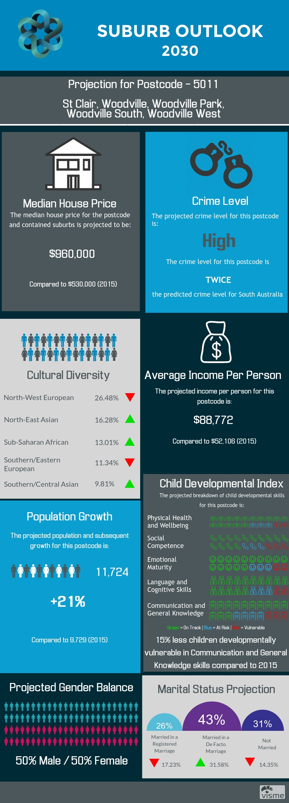
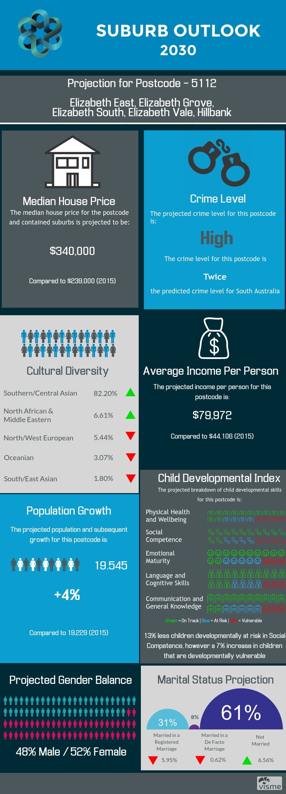
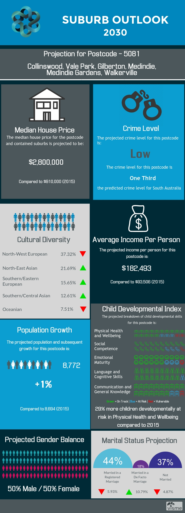

Suburb Outlook
Suburb Outlook is a forecasting tool designed to assist government authorities with making forward-thinking and informed decisions about the future development of the suburbs in a given postcode.
Our goal was to bring together as many datasets as possible from different sources to help visualise the economic and social make-up of a given postcode. We then extrapolated the existing 2006-2015 data to present the outlook of each postcode as it might appear in 2030. Due to the limited timeframe of the GovHack event, we limited our tool to three different and diverse postcodes in South Australia, showcasing a range of socio-economic parameters. The chosen postcodes encompass struggling, emerging, and established areas.
Projection for year 2030 for the 5011 postcode (emerging area)
Projection for the year 2030 for the 5112 postcode (struggling area)
Projection for the year 2030 for the 5081 postcode (established area)
suburboutlook.tech, 2017.